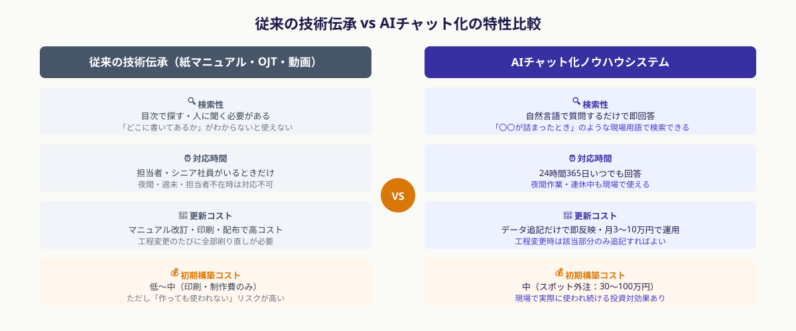
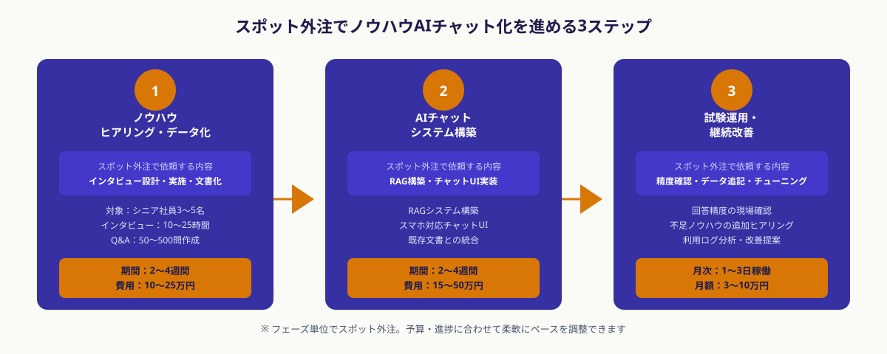

なぜ製造業の技術伝承はいまも「属人化の壁」に阻まれるのか
ベテラン・シニア社員が長年の現場経験で培った「勘・コツ・判断基準」などの暗黙知を、インタビューや文書化を通じてデータに変換し、若手社員が自然言語で質問・検索できるAIチャットボットとして運用できるようにする取り組みのこと。社内ナレッジ検索AI（RAG）技術を中核に使うことが多い。
国内製造業の約70%が「技術・技能の伝承が困難」と感じているという調査結果があります（中小企業庁調査、2025年）。にもかかわらず、対策が進まない根本的な理由は以下の3点に集約されます。
- 「言葉にならない」技術の多さ：熟練工の「音で分かる異常」「触れれば分かる品質」などは文書化を想定して習得されていないため、本人も意識化しにくい。聞き手のスキルが問われる
- 記録・整理のリソース不足：製造現場では生産性が最優先のため、ノウハウを記録・整理する時間的余裕が現場担当者には生まれにくい。外部に任せることが現実的
- 「マニュアルを作っても読まれない」経験則：過去に作成した紙マニュアルや動画が活用されなかった経験から、デジタル化投資への懐疑感が残っている。AIチャット型は「検索して聞く」という自然な使い方を実現する点で従来型と本質的に異なる
AIチャット型のノウハウ伝承システムは、「読んで覚える」ではなく「困ったときに聞く」インターフェースを提供します。若手社員が実際に困っている場面でリアルタイムに質問できるため、従来の紙マニュアル・動画マニュアルよりもはるかに活用率が高まります。

シニア社員ノウハウをAIチャット化する3ステップ
ステップ1｜ノウハウのヒアリング・データ化をスポット外注で実施する
AIチャット化の品質は「投入するデータの質」で決まります。最初のステップは、シニア社員が持つ暗黙知を言語化・文書化する「ヒアリング・データ化」です。このプロセス自体をスポット外注で専門家に任せることで、社内の生産ラインを止めずに高品質なノウハウデータを得られます。
スポット外注に依頼するヒアリング・データ化の内容
- インタビュー設計：どの技術・業務領域を対象とするか優先順位をつけ、質問項目を設計する。「なぜそう判断するのか」「例外はいつ起きるか」など、暗黙知を引き出す質問の組み立てが重要
- インタビュー実施と文字起こし：対象者（シニア社員）との対話を録音・文字起こし。複数回のセッション（1回60〜90分×3〜5回が目安）が一般的
- ナレッジ構造化：文字起こし内容を「状況→判断基準→対処法」の形式に整理し、AIが検索しやすい形式（Q&A形式・チャンク単位）に変換する
- 既存文書の統合：作業手順書・品質基準書・過去のトラブル対応記録など既存の社内文書もデータとして統合する
① 退職・異動の時期が近いシニア社員のノウハウを最優先にする
② 代替不能な特殊技術（特定機械の操作・製品固有の調整コツ）を優先する
③ 若手社員から「よく質問される」内容をシニア社員に聞いてリストアップする
④ 過去にトラブルが多かった工程・工程切り替えのポイントを選ぶ
この段階のスポット外注費用目安は10〜25万円・2〜4週間（対象者3〜5名・インタビュー10〜15時間相当）です。社内で自力で実施しようとすると担当者の確保・インタビュースキルの問題で品質が安定しないため、専門家への外注が現実的です。
ステップ2｜AIチャット化システムをスポット外注で構築する
ヒアリングで蓄積したノウハウデータをもとに、若手社員が実際に質問できるAIチャットボットを構築します。技術的な中核はRAG（Retrieval-Augmented Generation：検索拡張生成）で、「質問に関連するノウハウを社内データから検索し、AIが回答を生成する」仕組みです。
ChatGPT等の大規模言語モデルに「社内独自のデータ」を検索・参照させる技術。社内ノウハウ・社内文書に特化した質問応答が可能になり、「一般的な回答ではなく自社の基準・やり方に即した回答」を生成できる。汎用AIとの違いは「自社データに根拠を持った回答」ができる点にある。
スポット外注に依頼するシステム構築の内容
- データの前処理・ベクトル化：ステップ1で作成したノウハウデータをAIが検索できる形式（ベクトルデータ）に変換する
- RAGシステムの構築：LangChain・LlamaIndex等のフレームワークを使い、ノウハウデータを検索対象とした質問応答システムを実装する
- チャットUIの実装：スマートフォン・タブレットでも使えるチャット画面を構築する。工場現場での利用を想定し、操作が簡単なUIにする
- 既存システムとの連携（任意）：社内のSharePoint・Notionや生産管理システムとの連携が必要な場合は要件を整理して別途発注する

このステップのスポット外注費用目安は15〜50万円・2〜4週間です。既存のクラウドサービス（Google Cloud Vertex AI・Azure OpenAI等）を活用することで、ゼロからシステムを開発するより大幅にコストを抑えられます。
ステップ3｜現場での試験運用と改善をスポットで繰り返す
初期版のシステムが完成したら、実際の若手社員に使い始めてもらいます。試験運用を通じて「答えが不正確な質問パターン」「検索でヒットしない専門用語」などの課題が見えてきます。これらの改善をスポット単位で依頼することで、少ない追加コストでシステム精度を段階的に高められます。
試験運用で確認すべきポイント
- 回答精度の確認：実際の現場での質問を20〜50件収集し、回答が正確かシニア社員に確認してもらう。不正確な回答はデータ追加・修正につなげる
- 利用頻度・パターンの把握：どの工程・どの機械に関する質問が多いかを分析し、次のヒアリング対象を絞り込む
- データの追記・修正：試験運用で発見した「抜け」をシニア社員への追加インタビューで補充する。1〜2日のスポット依頼で対応できる
- 定期メンテナンス体制の構築：新しい機械の導入・工程変更があった際にデータを更新する体制（月1〜2日のスポット依頼）を確立する
① 最初から完璧を求めない。初期版は60〜70%の精度でスタートし、現場の声で改善する
② 若手社員に「質問履歴を記録する」習慣を付けてもらう。これが次の改善データになる
③ シニア社員に「AIが答えた回答を確認してもらう役割」を担ってもらうと精度改善が加速する
試験運用フェーズのスポット外注は月3〜10万円・月1〜3日稼働が目安です。大掛かりな改修が不要な間は、この小さな継続サイクルでシステムを維持できます。
費用・期間の目安（2026年）
スポット外注を活用したノウハウAIチャット化の全体費用と期間は、対象ノウハウの範囲・システムの複雑さ・既存文書の有無によって変わります。以下は2026年のANKENでの実績をもとにした目安です。
① 小規模（対象者1〜2名・特定工程のみ）：6〜8週間、費用 30〜50万円
インタビュー5〜8時間、Q&A50〜100問、シンプルなチャットUI
② 中規模（対象者3〜5名・複数工程・既存文書あり）：8〜12週間、費用 50〜100万円
インタビュー15〜25時間、Q&A200〜500問、既存文書との統合RAG
③ 大規模（対象者6名以上・工場全体・多言語対応）：3〜6ヶ月、費用 100〜250万円
外国人実習生向けの多言語対応・既存生産管理システム連携を含む場合
月次メンテナンス（初期構築後）：月3〜10万円（月1〜3日稼働）
データ追記・修正、利用ログ分析、精度チューニング
「ノウハウの範囲」と「既存文書の有無」が費用の2大変数です。まずスポット外注で「ヒアリング設計と対象範囲の洗い出し」（3〜5万円・1〜2日）だけを依頼し、そこで判明した規模感をもとに全体のスコープを決めることをお勧めします。
フルタイムのDX推進担当者を採用すると年間400〜600万円のコストがかかります。スポット外注での初期構築（30〜100万円）＋月次メンテナンス（年間36〜120万円）の合計は採用コストの3〜10分の1以下で、製造現場のノウハウ伝承課題を実質的に解決できます。
ANKENで専門エンジニアを探す流れ
ANKENはAI開発・システム開発のスポット外注に特化したマッチングサービスで、製造業向けのナレッジ管理システム・RAG構築の経験を持つエンジニアも登録しています。
- 無料相談（30分〜）：対象のノウハウ領域・シニア社員の人数・既存文書の有無・社内ITインフラの状況をヒアリング。「技術的な詳細がわからない」状態からご相談いただけます
- エンジニアのマッチング：ヒアリング・RAG構築の両方に対応できるエンジニア、または役割分担できるチームを1〜3営業日以内にご提案します
- ヒアリング設計からスタート：まずインタビュー設計・対象範囲の洗い出し（1〜2日・3〜5万円）から始めることで、全体コストを事前に把握できます
- フェーズ単位の継続依頼：ヒアリング→構築→試験運用改善の各フェーズをスポット単位で依頼でき、予算に応じたペースで進められます
「どんなシステムが自社に合うかわからない」という段階でも、ヒアリングを通じて最適な構成をご提案します。まずは相談ベースでお気軽にご連絡ください。
よくある質問
- Q. IT専任者がいない製造業でもAIチャット化システムは運用できますか？
- A. 運用可能です。スポット外注で月1〜2日の定期メンテナンスを依頼する体制にすれば、社内にIT担当者がいなくても継続運用できます。操作は若手社員がスマホでチャットする形なので利用側の習熟コストも低いです。
- Q. ノウハウのヒアリングはシニア社員の業務を止めますか？
- A. ヒアリングは1回60〜90分・計3〜5回が目安で、スポット外注の専門家がスケジュールを現場に合わせます。インタビューの録音・文字起こしも外注するため、対象者の負担は最小限です。
- Q. 既存の作業手順書・マニュアルもAIチャットに組み込めますか？
- A. 組み込めます。PDF・Word・Excelなどの既存文書はRAGのデータソースとして直接取り込めます。むしろ既存文書があるほど初期構築コストを下げられるため、社内の文書一覧をヒアリング時にご共有ください。
まとめ
製造業のシニア社員ノウハウのAIチャット化は、スポット外注の3ステップで実現できます。①ヒアリング・データ化をスポットで依頼（10〜25万円）→②AIチャットシステムをスポットで構築（15〜50万円）→③試験運用と改善をスポットで繰り返す（月3〜10万円）、この段階的なアプローチで「専任DX担当者なし・フルタイム採用なし」でも技術伝承の属人化を解消できます。
「どの技術から始めるか決まっていない」「どんなシステムが合うかわからない」という段階でも、ANKENへの無料相談からヒアリング対象の優先順位づけと全体スコープの整理を始められます。まずは30分の相談からお気軽にご連絡ください。